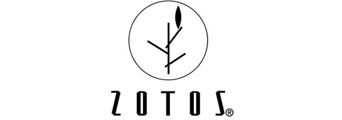

School of Media Sciences
1
2
3
4
5
6
On October 22, 2014 graduate students and faculty from the School of Media Sciences visited Zotos International in Geneva, NY for a comprehensive tour of their package printing operations, which included digital and screen printing technologies.
Zotos is a manufacturer of beauty products that are sold and distributed through salons: their products include hair care, texture service, and color options. The parent company of Zotos is the Japanese cosmetic company Shiseido. The Geneva facility manufactures and packages over eighty brands which are sold all over the world. The students and faculty from RIT were shown their digital printing operation, which included an HP Indigo digital press that is primarily utilized for short-run labels. Zotos products are distributed through salons rather than big box stores. As such, they need to be flexible in terms of order fulfillment: the digital capability helps them in this regard. In addition, the screen printing operation included the ink room was a highlight of the tour. Here, plastic bottles are printed in high volumes, and the production is on a much greater scale than more common and manual-labor intensive t-shirt screen printing operations. It is especially interesting to note that Zotos extrudes their own plastic bottles, they have the ability to manufacture unusual shapes and colors to increase the shelf appeal. Of course, these bottles present special challenges for screen printing, and the RIT students were given a glimpse of the challenges and communications required when brand ownership, design, engineering and printing process meet.
October 29th by Allison Ritter
